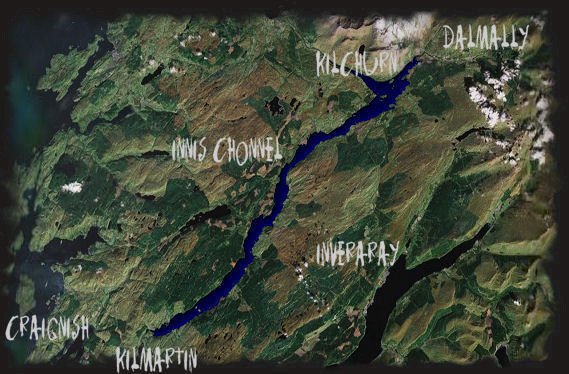

Nach schottischer Mythologie verdanken einige Landschaftselemente ihre Existenz der lokalen Gottheit, Cailleach Bheur, die oft als Hirtin mit magischen Kräften dargestellt wird.
Jede Nacht, nachdem sie ihre Herde nach Hause gebracht hatte, bestieg sie den Berg Ben Cruachan und bedeckte dessen Quelle mit einem flachen Stein, damit er während der Nacht nicht das Flachland überschwemme. Eines Abends war sie vom Ziegenhüten so müde, dass sie auf dem Weg zum Berg einschlief und erst aufwachte, als das Wasser bereits in einem wilden Sturzbach ins Tal hinabraste. Die Hirtin versuchte vergebens, das Wasser aufzuhalten und eine Überflutung zu verhindern. Doch die Strömung war selbst für sie zu stark. Sie musste sich geschlagen geben und hinnehmen, dass das Wasser das Tal einnahm: Menschen und Tiere ertranken und wurden mit den Fluten fortgerissen. Die arme Hirtin fühlte sich verantwortlich und verwandelte sich starr vor Entsetzen in einen Stein. Aus dem überfluteten Tal entstand der Loch Awe, der See der Ehrfurcht.
